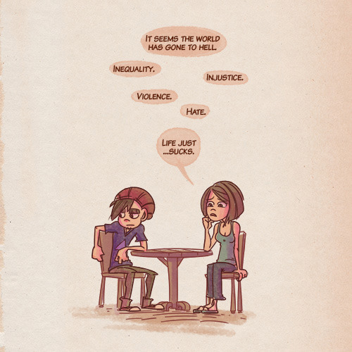
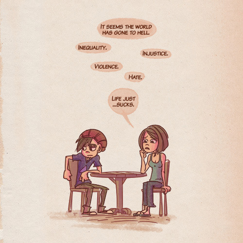
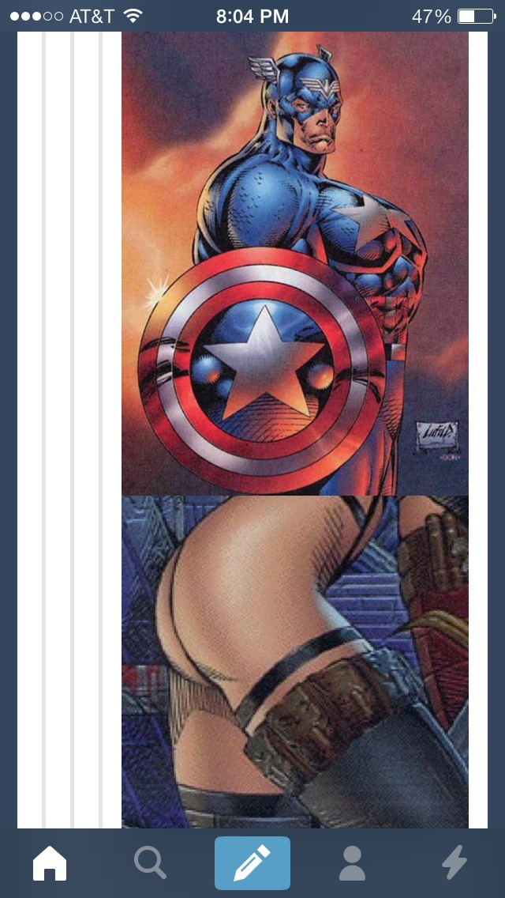

Being good to each other is so important, guys.
An important PSA.

Being good to each other is so important, guys.
An important PSA.


me too, Arya, me tooooo
This whole scene is golden.
you could hear arya going through puberty

People are giving Wilson money to thank him for killing an unarmed black teenager. Please report this to GoFundMe, as it violates their Terms of Service and they get 5% of the tens of thousands of dollars being donated. Click to report.
The “Support Officer Wilson” page url: http://www.gofundme.com/supportofficerwilson
This is my message, in case you want to copy and paste:
Your Terms of Service prohibit “items that promote… hate, racial intolerance, or the financial exploitation of a crime.” Take a look at the comments that come with the donations on this page and tell me that doesn’t violate your terms. “Support Officer Wilson” is a thin veil for people rewarding Wilson for killing a black kid.
A few times recently, when discussing privilege and systemic oppression with well-meaning intellectuals, I’ve heard this phrase or some variant of it:
“Race doesn’t exist. It’s not a real thing.”
There’s an argument to be made that, from a biological point of view, there’s really no substantial difference between what we might call a “white person” and a “black person”. Stepping outside of relatively recent Euro-American culture, these specific terms might not even be meaningful, to the extent that they ever were.
However, this is a very reductionist way of looking at the situation in absence of some extremely relevant context.
First of all, skin tone, body type, and other physical characteristics are frequently used as markers of inclusion in a particular cultural group, even if the person themselves does not identify with that cultural group. A dark skinned man from Pointe Noire may have basically no cultural overlap with a dark skinned man from Oakland, whereas I might have a lot of cultural overlap with him, since we live in the same city and speak the same language. However, many members of our society would put those two in one group, and me in another. This is relevant; ignoring its relevance isn’t rational.
If your “race is fake” idea is a thought technology that helps you place a bright red “irrational” flag on any ideas that pop up that might have some racist influence, then fine.
But if “race is fake” is used as a “get out of this conversation free” card to avoid even discussing the systemic oppression of American people with the physical characteristics typical of people from west Africa who were sold into slavery (to pick one example of many), then you’re just using your liberalism as a pass to be intellectually lazy about context.
Human cognition is practically built on laziness. So, if I had to bet, I’d guess that any time you say “race isn’t a real thing”, it’s just a way to be lazy. (Of course, I’m not going to bother collecting evidence, or even actually betting, because laziness.)
“I don’t see race” always reminds me of the “pilot” conversation in Pulp Fiction:
I think her biggest deal was she starred in a pilot.
“Pilot”, what’s a “pilot”?
Well, you know the shows on TV?
I don’t watch TV.
Yeah, but, you are aware that there’s an invention called television, and on this invention they show shows, right?
Here’s how I’d like to start responding to inappropriate use of “race isn’t real”:
discussing a code of conduct which lists “race” and “ethnicity” as attributes explicitly protected from harassment
As for diversity, I don’t recognize the notion of race (which doesn’t exist)
Yeah, but, you are aware that there is a social invention called “race”, and that this invention is frequently a basis for harassment and discrimination, right?
And yes, of course, it would be a much better society if everyone also didn’t recognize the notion of race (which doesn’t exist). But by not recognizing the effect that “race” has in systemic oppression, you are not recognizing the notion of broken social systems (which certainly do exist).
Be the change you want to see in the world. But also be aware that that’s almost certainly not enough, and ignoring systemic oppression is a privilege not granted to those who are being oppressed.
Note: s/race/gender/g in this post, and it’s basically the same. Except I’d argue that gender exists, but not in the rigid binary that our culture insists. Ie, “gender” is a real thing; our cultural paradigm of “woman” or “man” probably isn’t.
And yes, if you grew up on this planet, you do see race. What you don’t see is yourself seeing it.


Every new startup CEO can relate, I’m sure.

THERE WAS A GLITCH ON MY PHONE WHEN I SCROLLED DOWN THIS POST AND IM SHITTING
rob liefeld’s final form
i love the term “partners”
are we dating?
are we robbing a bank?
do we run a legal firm?
are we the dedicated detectives who investigate these vicious felonies and are members of an elite squad known as the special victims unit?
who knows.

I JUST SAW THIS ON FACEBOOK
O M Gjesus wants in on a threesome